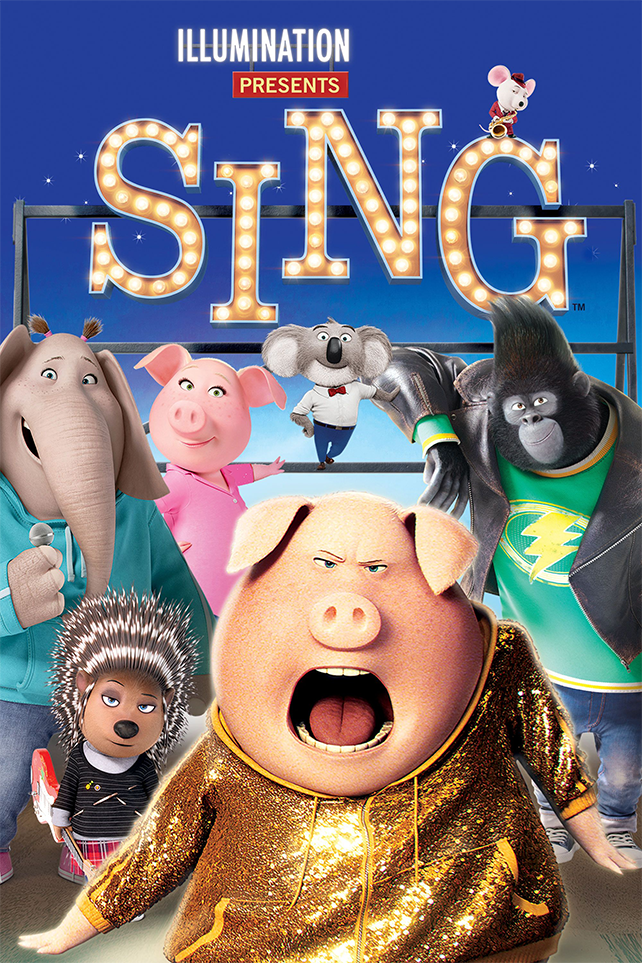

"Dream, big dream!"
한때 잘나갔던 문(Moon) 극장의 주인 코알라 ‘버스터 문’(매튜 맥커너히)은 극장을
되살리기 위해 대국민 오디션을 개최한다. 하지만 한 순간의 실수로 우승 상금이
1,000달러에서 10만 달러로 바뀌게 되고 이로 인해 전국 각지에서 동물들이 몰려와
오디션에 참가하게 된다. 25남매를 둔 슈퍼맘 돼지 ‘로지타’(리즈 위더스푼), 남자친구와
록스타의 꿈을 키우는 고슴도치 ‘애쉬’(스칼렛 요한슨), 범죄자 아버지를 둔 고릴라 ‘조니’
(태런 에저튼), 무대가 두렵기만 한 코끼리 소녀 ‘미나’(토리 켈리), 그리고 오직 상금이 목적인
생쥐 ‘마이크’(세스 맥팔레인)까지! 꿈을 펼치기 위해 한 자리에 모인 이들은 자신들의 무대를 시작한다.
영화 씽, 뮤지컬 애니메이션
주제 자체는 무겁지 않고 가볍다 할 수 있다.
원하는 것을 하기 위해 노력하는 이들을 보여주는 것이 주된 내용이며 노력을 틀리지 않았다는 것을 내포하고 있다.
애니메이션이지만 전문 성우보다는 배우들이 각 캐릭터의 목소리를 맡아 연기했다.
캐릭터들이 하는 노래들도 배우들이 직접 불러 삽입했다. 감정적으로 공감이 되는 애니메이션이며 끝자락에서는
나도 저렇게 하고 싶다. 라는 생각이 들게끔 만든다.
노래들은 현실 세계의 가수들의 노래를 커버했지만 캐릭터들의 서사와 연출과 잘 맞아떨어져
익숙한 노래지만 다른 노래처럼 들린다. 우리는 무엇을 위해 사는가. 우리를 무엇을 좋아하는가.
한 번씩 생각해보면 좋을 의문점이다. 여기에 나온 캐릭터들은 이미 자신이 하고 싶은 게 명확하니,
당신은 아직 그것을 찾지 못했다면 이 영화를 보며 생각해보는 건 어떠한가.
●
"When you’ve reached rock bottom, there’s only one way to go, and that’s up!"